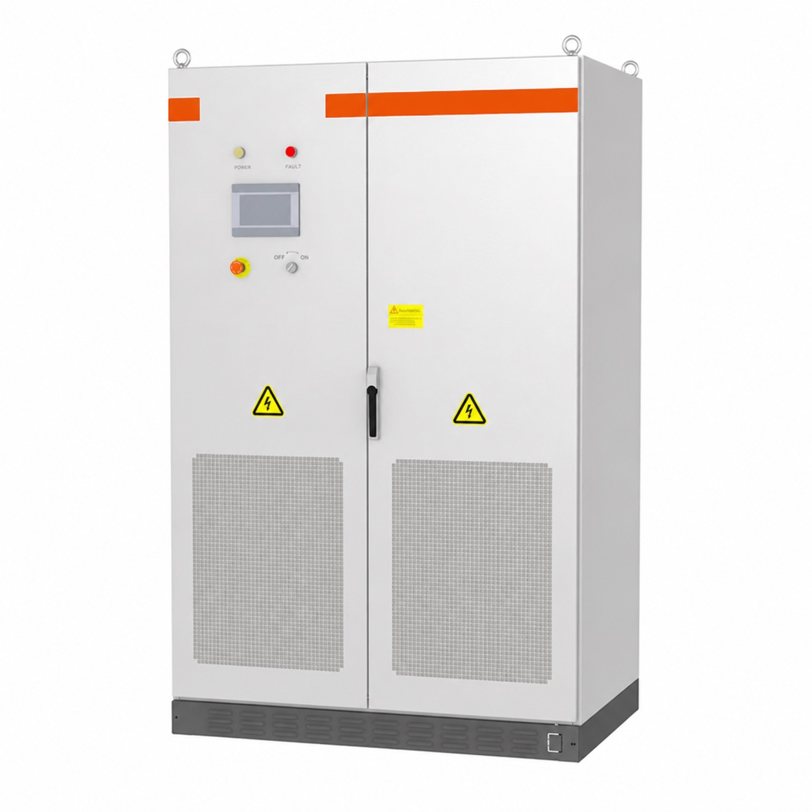

Buyer guide / 02
The right sources.
Working together.
Grid-connected, hybrid and off-grid systems answer different site conditions. Select the architecture around your power supply, loads and recovery plan.
Read the system guide
01 / Start at the connection
Describe the supply you actually have.
Record whether the grid is available, its voltage and phase arrangement, the connection capacity and any restrictions on exporting energy. For an unreliable supply, collect the frequency and duration of interruptions. Note voltage disturbances separately from complete outages.
Then map the loads. A daytime workshop, an evening business and a continuously operating remote site can have similar annual consumption but need very different systems. Record peak demand, daily energy, start-up loads and the equipment that must keep running.
One question that changes the design
Does the project primarily need to reduce purchased energy, continue operating through grid interruptions, or supply a site with no dependable grid? Write the answer in the project brief before comparing products.
02 / System architecture
Choose the operating arrangement.
- Grid-connected solar: uses available solar while the utility supplies the balance. Backup requires equipment and an installation arrangement designed for operation during a grid outage.
- Grid-connected hybrid: combines generation and storage while retaining the grid. Functions may include self-consumption, backup, scheduled charging or export control, depending on the selected equipment and installation.
- Off-grid: supplies a local electrical system without depending on the utility connection. It needs coordinated sources, a device capable of establishing the local supply, enough storage and a plan for low-generation periods.
The word “hybrid” can describe several arrangements. Ask for the actual single-line diagram, supported operating modes and source priorities. Confirm whether solar connects on the AC side, the DC side or both, and check all devices for the chosen architecture.
03 / Resource & demand
Match generation to the site’s operating pattern.
For solar, review available roof or land, shading, mounting conditions, local weather and the timing of consumption. Estimate output using site-specific resource information and the proposed array orientation. Plan how surplus energy will be used, stored, curtailed or exported.
For wind turbines, assess the resource at the proposed installation height and consider surrounding obstructions, turbulence, tower access, noise requirements and maintenance. Review the proposed turbine’s output information against measured or defensible local wind data.
A hybrid solar-and-wind system can diversify generation, but its value depends on the resources and when they are available. Adding another source also adds electrical and control interfaces. Review the expected benefit alongside installation, maintenance and support requirements.
Wind resource reading: U.S. Department of Energy Small Wind Guidebook.
04 / Resilience
Plan for the difficult day.
Specify the agreed essential loads and the period they need support. Review the sequence for grid failure, low battery charge, low renewable generation and return of the normal source. The equipment schedule should say which devices support each step.
Where a generator is included, confirm its rating, starting method, controller interface and operating constraints. Coordinate charging with the generator’s available capacity and site demand. Decide whether it starts automatically, who may override it and how fuel availability is managed.
Discuss recovery as well as backup duration. After an extended interruption, the system must supply the site while restoring the battery reserve. For sensitive equipment, confirm transfer behaviour and whether a dedicated UPS or other continuity arrangement is required.
05 / Coordination
Make every source part of one plan.
Define operating priorities in plain language: what serves the loads first, when the battery charges, how much reserve remains and when a generator or grid connection takes over. Then confirm that the selected controls can implement that strategy.
- Battery and inverter compatibility, including communication and firmware.
- Grid connection, approved export limits and required protection.
- Generator synchronization or transfer arrangement, as applicable.
- Meter locations, alarms, remote monitoring and access permissions.
- Load shedding, expansion limits and restart behaviour after shutdown.
Document responsibilities for installation, configuration, commissioning and after-sales support. The buyer should know who handles an inverter alarm, a battery communication issue and a site electrical fault.
06 / Procurement questions
Bring a site brief to the product discussion.
Before selecting equipment, share the installation country, grid conditions, load information, renewable resources, required backup period and any existing equipment. Include photos and a single-line diagram where available.
Ask for a scoped proposal that states its assumptions, operating modes, equipment combination, installation requirements and exclusions. Where future expansion matters, define the expected additional loads and confirm the selected platform’s actual expansion limits.
Build the next conversation
Review power conversion, solar generation, wind turbines and storage planning as parts of the same project. Use our project checklist to capture the brief.
Further technical reading: SMA AC-coupled off-grid planning and hybrid AC/DC system planning.
Configure around your site
Power continuity starts
with a clear operating plan.
Tell us how your site receives power, which loads matter and what needs to happen when the normal supply stops.